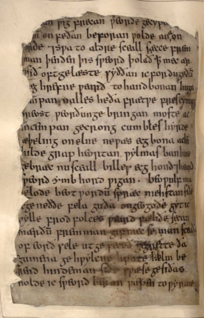

Epic Summary
Folio 185V
TranscriptionGegrette da gumena geliylcne hwate helmberend, hindeman siðe, swæse gesiðas: "Nolde ic sweord beran,
Translation
Beowulf spoke; a boasting speech for his last journey: “I dared many battles as a young warrior; yet I am willing now, old and wise, to seek as the nation’s guardian further fame and glory, if the guilty ravager seeks me from its earthen grave.He saluted each one of the men, the brave helm-bearers, for this last undertaking with his beloved companions, “I would not bear this sword as my weapon to the Wyrm if I knew how I might go against this fiend, how could I grapple as I did long ago against Grendel?
I have hope, for I know it commands breaths of war-fire and poison; therefore I will have on shields and armour. I will not flee a footstep from the mountain, but we two will draw to our destiny at the wall, where God meets man. I am brave in mind, and I will go there to the war-flier, and boast no more.
Commentary
1 Vanguard refers to a military detachment. Day-Raven (Dæghrefne) is theorized as a scavenger who struck in prosperity. Germanic tribe originating from Scandinavia. Calling the dragon "the wicked harmer" is a clear indication of the association with Satan.
Folio 186R
TranscriptionGif ic [w]ifce hu [w]iðõam aglæcan elles | Mæhte gylpe [w]iðgripan S[w]a ic gio [w]io Grendle dide ac ic ðær heaðu fyres reões hattres forðon ic me on hafu bord byrnan nelle ic beorges [w]eard oferfleon fotes trem ac unc furður sceal [w]eorðan æt [w]ealle swa unc wyrd geteod metod manna gehwæs Ic eom on mode From þæt ic wið þone guõflogan gylp ofer Sitte gebide ge on beorge byrnum werede secgas on sear[w]um h[w]æðer sel mæge æfter wælræse wunde gedygan uncer twega. Nis þæt eower sið ne gemet mannes, nefne min anes, þæt he wið aglæcean eofoðo dæle, eorlscype efne. Ic mid elne sceall gold gegangan, oõõe guð nimeð, feorhbealu frecne, frean eowerne!" Aras ða byronde rof oretta, heard under helme, hiorosercean bær under stancleofu, strengo getruwode anes mannes. Ne bið swylc earges sið! Geseah ða be wealle
Translation
if I knew how I might go against this fiend, how could I grapple as I did long ago against Grendel? I have hope, for I know it commands breaths of war-fire and poison; therefore I will have on shields and armour. I will not flee a footstep from the mountain, but we two will draw to our destiny at the wall, where God meets man. I am brave in mind, and I will go there to the war-flier, and boast no more. Wait in your armor on the hill, defended in your breastplates, to discover which of us two will better survive their battle wounds. Your journey is not proper for the likes of man, except for me alone, that one should prepare your share of strength and nobility, against this terrible foe. I am obliged to seek that treasure with utmost zeal, until war takes your lord away to death in fatal battle!" Then that brave warrior raised his shield, stern under his helmet, bore his chainmail under the stone-cliffs, and trusted the strength of one man alone. Such an endeavor was not wretched! He saw many multitudes of them by the wall.
Commentary
Crashing, slashing, and storming into battle requires the proper arms and armor, no hero would be complete without his suit of arms and armor. These ancient artifacts are the harbingers of victory or the heralds of defeat. In Beowulf, the choice of weaponry is more than just for narrative purposes, it penetrates the text to emphasise the struggle of man against beast, man honoring (or dishonoring) man, and man performing destiny. At once a treasure of symbolism and a token of force, the swords of Beowulf are essential to the concept of a hero.
The passages pertaining to Beowulf’s swords lend themselves to illustrating the emotional turmoil and dramatic effect that takes place in every battle Beowulf and others encounter. The function of a sword varies from being an object that embodies power to an object that enables power. The sword indicates the difference between the slayer and the slain. The sword reveals the strength of those who wield it. The sword is the final determination of those who are worthy.
From victim to victor, the sword is the extension of those who wield it. From the beginning of the story, the significance of the sword is first introduced as a gift from father to son, an heirloom that displays the trophy of tradition and the spoils of a war won. Throughout the story, the sword is the protagonist. The sounds and effects of a sword blow permeate the text. Scenes of the sword also contribute to a more solemn part of the story. The fallen heroes are dignified in death with their personal arms and armory. The bite of iron softens the blow of death.
Serving unique functions throughout the tale, the concept of arms and armory contribute to the character of both the triumphant hero and the honored fallen warrior. Arms and armor are the currency of the heroic system. Everyone abides by the inherent glory of objects capable of death and destruction.
Folio 186V
Transcriptionse de [w]orna fela gu[m]cytcu[m] god guða ge- digde hilde hlem ma pon hnitan feðan stodan stan bogan strea[m] utponan. brecan ofbeorge [w]æs pære burnan [w]ælm heaðо- fyru[m] hat. nemeuhte horde neah un- byrnende ænige h[w]ile deop ge dygan for dracan lege. letða ofbreostu[m] ðahe gebolgen [w]æs [W]eder Geata leod [w]ord ut faran stearc heort styrmde stefn in becom heaðo torht hlynnan under harne stan hete [w]æs onhrered hord- weard oncnio[w] mannes reorde næs õær mara fyrst freode to friclan fro[m] ærest c[w]om oruð aglæcean ut ofstane hat hilde s[w]at Hruse dynede biorn under beorge bordrand ons[w]af [w]iðõam gryre gieste Geata dryhten ða [w]æs hrung bogan heorte gefysed sæcce toseceanne s[w]eord ær gebræd god guốcyning gomele lafe ecgu[m] un- gleaw Ægh[w]æðru[m] [w]æs bealo hycgendra
Translation
good men of manly qualities, who had survived many wars, when companies clashed. And there stood a stone arch and out from there a stream that burst forth from the barrow; unable to endure the surging stream of hot deadly fire nor be near the treasure and endure inside the deep at any time without burning because of the dragon fire. Therefore, the man of the Geates, then from his breast a word fared, the stout-hearted stormed and clearsounding in battle, roared under the grey stone. The guardian of treasure recognized a man's voice; his hate was aroused. There was no more time to ask for friendship. Out from the stone, first came forth the breath of the formidable one, a hot hostile vapor. The Earth resounded. At the foot of the barrow, the warrior lord of the Geates turned his shield against the dreadful stranger; Against the gryreġieste, the gates of the Lord; then was ring-bow heart hastened to seek battle. The sword was early drawn by the warlike king, old bequest, sword unslāw; To each was evil-doers terror from another.
Commentary
Role of the scop. Contrast between Beowulf's generosity and the dragon's greed. Imagery of the barrow suggesting downfall.
Folio 187R
TranscriptionBroga fram oðram stiðmoð gestod wið steapne rond winia bealdor Ða se wyrm gebeahsnude tosomne. He one searwum bad. Gewat a byrnende gebogen scriðanTos gescipe serntan. Scyld welgebearg life Ond lice laessan hwilemaerum ðeodne ðonne His myne sohte,Ðaer he ðyfynste for man togone wealdan moste, swa him wyrd ne gescrafHreð aet hilde. Hond up Abraed geata dryhten, gryrefahne sloh Inegelafe, ðaet sio ecg gewacbrun on baon, bat unswiðor ðonne his ðiod cyning ðaerfe heafde,Bysigum gebaeded. Ða waes beorges weardAefter heaðuswenge on hreoum moðeweanrp wearl fyre; wide sprungonHildeleoman. Hreðfigona negealð Goldwine geata. Guðbill geswac, Nacod niðe, swa hyt nosceolde, iren argos. ne waes ðaet eðe sið,Ðaet se maera maga EcgðeowesGrunddwong wang ðone ofgyfan wolde. Scolded willan wic eardan. Elles hwergen.
Translation
Courageously stood with a tall shield friend lord, then the dragon turned quickly together; he had skill and experience. The departed burn turned and glided to the community to hasten. The shield fully protected the glorious king's life and body for a little while when his mind sought, where he then for a little while, first day... Control may so him fate did not decree Glory in battle. Hand lifted up Lord of Geats, terrifying struck Ingeldafe that the blade failed Shiny on bone, bit less strongly Than his great king need have, Busy forced. Then was mountains guard After battle-stroke on fierce courage Warp slaughter-fire widely sprang Battle-light. Hreðsigora did not boast Gold-friend Geata. Guðbill geswac, Naked at dark, so it no must Iron before-good. Nor was that easy journey That the famous to be able to Ecgðeowes Ground-plain he would give up Against his own will Otherwise be elsewhere inhabiting the abode
Commentary
Contrast between stillness and rushed movement. Failure of the sword suggesting Beowulf is no longer as powerful as he once was. Tension between effort and fate.
Folio 187V
TranscriptionSceal æghwic mon alutan lændagas. Nas ða long to ðon ðæt õu aglæcan hy eft gemetton. Hynte hyne honðweard, hreõer æðme weoll, niwan stefne niwan strefne. Nearo õrowode, fyre befongen se õe are folce weold. Nealles hi on heape heandgestallan, Æðelinga bearn, ymbe gestodon hildecystum ac hy on holt bugon ealdre burgan. Hiora in anu [w]eoll sefa wið sorghum. Sibb æfre ne mæg wiht onwendan ðam ða wel õenceð. XXXVI Weglaf wæs haten, Weoxstanes suni, leoflic lindwiga leod Scylfinga mæg æflheres. Geseah his mondryhten under heregriman hat õrowpian gemunde ða ða are õe he him aer forgaef [w]icstede weligne Wagmundmga folcrihta gehwylc swa his fæden ahtre ne mihte ða forhabban hond rond gefeng geolwe linde gomelswyr getæh õat wæs mid eldum Eanmundes laf
Translation
thus very warrior man Leave transitory days So that monster Guardian's heart injure New time Encompass crime towards it, that long headland he met again breathing breath accustom suffer distress present that one person before
Commentary
"Laendagas" (leasehold of days). Betrayal of the handpicked warriors. One loyal man (Wiglaf) is worth more than ten cowards.
Manuscript History
History of the Manuscript
The existence of Beowulf today is nothing short of a miracle. The poem survives in a single volume known as the Nowell Codex (or Cotton MS Vitellius A.xv). While the author remains a mystery, we know the physical book was produced by two different scribes working in a "historical window" between 975 and 1025 AD. The first scribe recorded the first 1,939 lines before the second scribe took over to finish the epic.
In 1731, the manuscript faced its greatest threat during a massive fire at Ashburnham House, which contained the famous Cotton Library. Legend tells of librarians, most notably Dr. Richard Bentley clutching precious volumes and tossing them out of windows to escape the inferno. Beowulf survived the heat, but the vellum pages were badly scorched and became incredibly brittle.
For over a century, the manuscript was slowly dying; the charred edges would flake off into "dust" every time a page was turned. In 1786, an Icelandic scholar named Grímur Jónsson Thorkelin commissioned transcripts of the poem. Because he copied the text before the edges had fully crumbled, he preserved hundreds of words that have since physically vanished. It wasn't until 1845 that the British Museum (the predecessor to the British Library) halted this decay by framing every individual page in protective paper mounts.
Commenting On The Thematics
Wyrd means fate:
A central theme of the poem is the inescapable nature of Wyrd, or Fate. Unlike the modern idea of "free will," the characters in Beowulf believe that a person’s end is predetermined. This is most evident in Beowulf’s final battle with the dragon. Despite his legendary strength, he approaches the fight with a sense of "doom." He accepts that he might die not because he is weak, but because his Wyrd has decreed it. For a hero, greatness is not found in avoiding death, but in facing one's fate with courage
Lof meas immortal fame:
The tension between these two belief systems is best seen in the concept of lof, or immortal fame. In the Pagan tradition, there was no concept of a Christian Heaven; therefore, "immortality" could only be achieved through the stories told by the living. To the Anglo-Saxon warrior, being forgotten was the ultimate death. Consequently, every heroic act and formal boast was a calculated effort to ensure their name lived on in the songs of poets (scops) for generations.
Nowell Codex: manuscript dating around 1000 AD
“In the early hours of 23 October 1731, the building went up in flames. The keeper of the manuscripts, Richard Bentley, dressed only in wig and nightgown, rescued the fifth-century Codex Alexandrinus – although the story that he leapt through a window to do so is unlikely.”
Grímur Jónsson Thorkelin:
He thought the poem was incredibly old, dating back to 340 AD. He also believed it was originally written in a Scandinavian language and later translated into Old English. Other experts of his time immediately disagreed. They argued the poem was actually composed much later—somewhere between 700 and 750 AD. Thorkelin lost the argument. Most scholars eventually agreed that Beowulf is an original Old English work, not a translation, and it isn't nearly as old as he claimed.
Thematics & Adaptations
The battle between the Dragon and Beowulf is the first time in European history of a “fire-breathing” dragon. This battle was the beginning of a now-recurring theme of dragons and the slaying of them. One of the most notorious Beowulf-esque dragons is that of - Smaug.
A similarity between the dragon of Beowulf and Smaug could be made in the fact that they are drawn to anger by a thief. In Beowulf, the dragon that attacks is very greedy and angry at the loss of a single chalice. Dragons in the European world were often associated with the sins of : Greed, Wrath, and Gluttony. These ties to the “Deadly Sins” are due to the association of serpents in pagan mythology, where the Christian churches who were in charge of education, attempted to merge the two in an attempt to create a shared feeling of moral dissidence.
Tolkien has stated that Smaug was not inspired by Beowulf’s dragon - he was actually much more based off of the Norse mythological dragon of Fafnir. Although, the Fire-Breathing aspect of Smaug has direct ties to Beowulf’s dragon. However, the weaknesses of both dragons seem to be quite similar. In Beowulf’s Dragon, he has a soft underbelly which is exposed enough for Beowulf to stab him. In the media adaption of The Hobbit movie, Smaug is slain by an exposed scale that gives way to Bard being able to shoot him and slay the dragon.
In the 2007 film adaptation of Beowulf, the Dragon in which Beowulf slays is actually part of Beowulf’s family. He is the son of Beowulf and the mother of Grendel through an agreed upon union for peace in the lands.
A unique thing I found in my research was that a “good king” during the writing of Beowulf, was a king who would share his wealth and riches with his people. The opposite could be said of Beowulf’s dragon, as he would hoard all that he had, which is in direct juxtaposition with Beowulf - who shared his power and wealth with his people.
In Germanic folklore, epics and old stories, dragons represent a collector/hoarder, directly contrasting other characters such as kings, who were sometimes regarded as “gold-givers.” Seeking revenge, the dragon unleashes fire that spreads throughout Geatland. This causes mass destruction as homes are left demolished, and ultimately left the society to an end. The Last Fight: Context and Stakes Fifty years after Beowulf’s defeat of Grendel, he was later appointed King of the Geats. Beowulf’s old age becomes a factor in his ability to lead and fight, indicating that “The Last Fight” would be his final battle. This is paralleled by the Anglo-Saxon theory of Wyrd, better understood as fate.
The Iron Shield: Beowulf creates a shield fully made of iron, in the effort of safeguarding himself from the dragon’s breath. The dragon’s breath has the ability to completely demolish any items made of wood, or similar material.
Additionally, Beowulf hand-selects 11 thanes to accompany him to the dragon’s living quarters. However, once the battle begins, these thanes break their commitment to defend and fight against the dragon by escaping the scene. This is perceived by some as representing the lack of structure amongst the society of the Geatish people. The one thane to remain is identified as a young man named Wiglaf. His role in the battle is vital as it spotlights the passing on of virtue from one generation to the next. The Climax and Aftermath The Charge: Beowulf’s initial strike to the dragon, which results in the dragon responding with fire.
The Breaking: Beowulf strikes once more using all of his perceived strength. His sword, called Naegling, breaks in half. The dragon delivers a venomous wound to Beowulf.
The Killing: Wiglaf defeats the dragon by striking its underbelly, which weakens it. Beowulf strikes with a different weapon, leaving the dragon in two pieces. The Conclusion Beowulf ends up passing due to the venomous wound left by the dragon. While his death is inherently difficult to grasp, his impact evokes feelings of melancholia. He not only was able to acquire treasure for the Geatish people, but also provided safety to the Geats who were facing danger from outside communities. The epic ends with Beowulf’s funeral, which transitions to a new era outside of the “Heroic Age.”